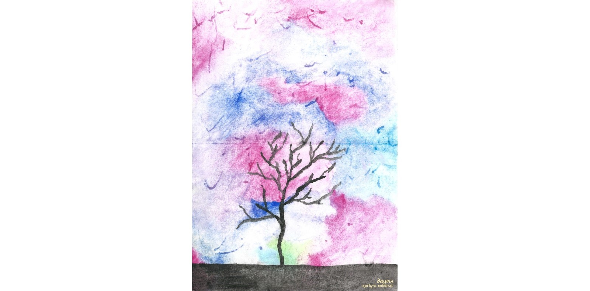
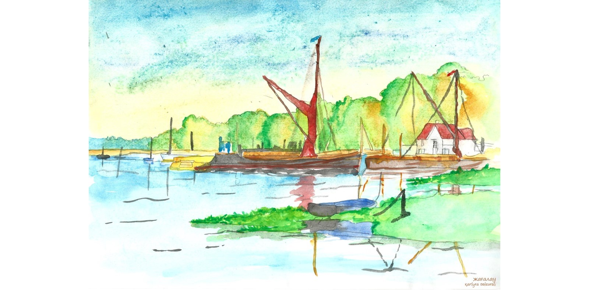
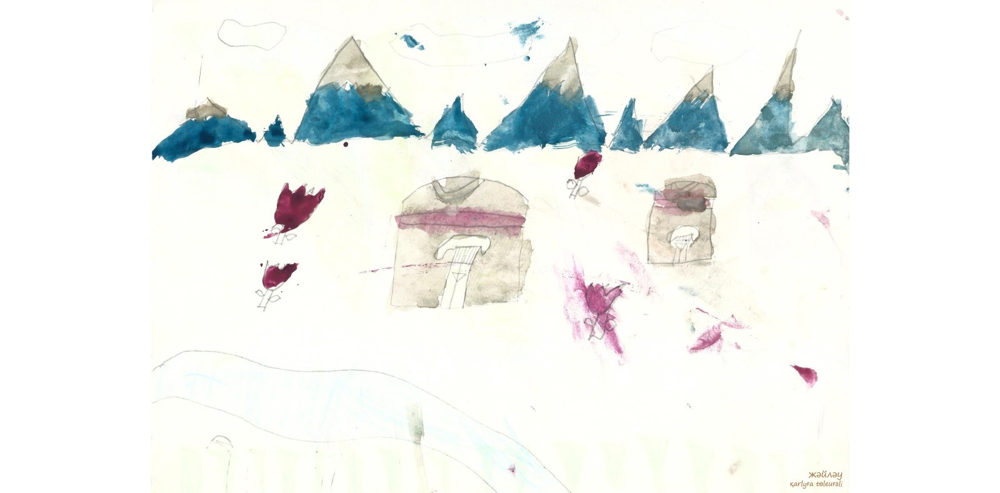
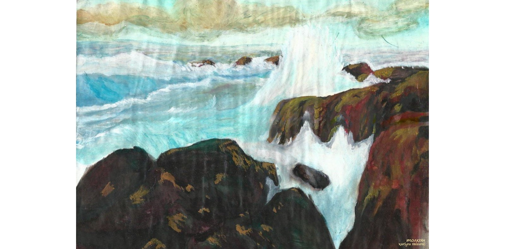
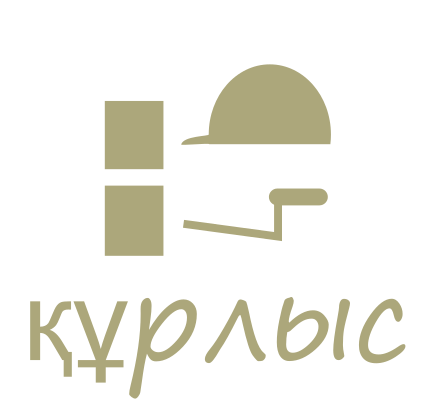

адамдар ....
бөлме ғимарат жобалар
ғарыш тылсым әлем
гүлдер
өсімдіктер
қалыпталған кескіндер
қолданыс заттары
жануарлар
өнер білім спорт
сән үлгілері
табиғат
үй
пәтер
бөлме алаң
ғимарат
жер телімі
жеңіл
жолаушылар
жүк
қызмет
белсебет
мотосекл
су
әуе
нан өнімдері
сусын
кәмпит
торт
жеміс жидек көкөніс
қайнатпа
тұздалған
бас кйім
үстіңгі
астыңғы
айақ
спорт
балалар
арнайы
ас үй
құрал
құрылғы
бақша
ойын

әк үнтақ
бойау
түс қағаз
кірпіш блок
ағаш
темір
тазарту
әтір саулық
ас үй
қонақ
жатын
кеңсе
көпшілік
арнайы
дәптер
кітәп
жазу сызу
бойау
қағаз
құрал
төрт түлік
ит мысық....
жабайы
үй көмекшісі
оқыту жаттықтыру
су торабы
электр, басқа желілер
заңгерлік